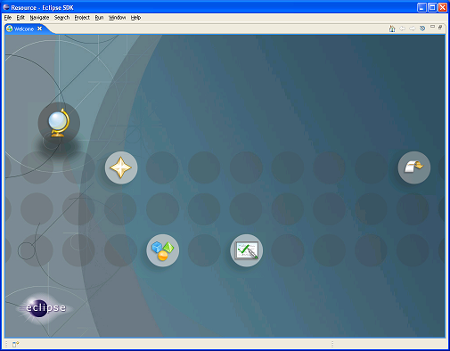
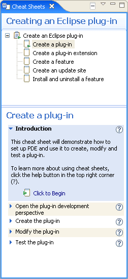
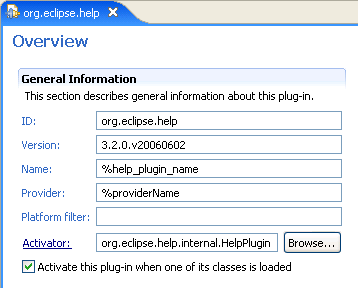

User Assistance is a component of the Eclipse Platform whose mission is to provide for assisting users of Eclipse applications in all phases of the usage cycle. It is not a single workbench artifact but rather a collection artifacts tailored to provide a particular flavor of assistance.
The User Assistance component includes the following systems and mechanisms:
* Although UI Forms are strictly a SWT-based toolkit for creating slick user interfaces and are not directly aimed at User Assistance, it is listed here because it is owned by the same team and because form-based UIs are typically easier to understand and use. In addition, UI Forms are particularly good at integrating user assistance content directly into the user interface. This reduces the need for users to leave the work area to read user assistance content.
User Assistance is more than the current list of technologies. Our mission can be summed up in the following way:
The User Assistance component is a hub for all ideas and mechanisms that serve the purpose of making Eclipse applications easier to use both for new and returning users.
We will briefly describe the current elements of the User Assistance component the following section.
Welcome support provides for greeting the first time users of an Eclipse application with a series of pages that are meant to introduce him/her to the application and make the initial experience favorable. The implementation can simply guide the user through the initial setup and then offer common tasks to do in the application, offer tutorials, samples (for development applications), links to online resources, news etc.
The trigger and lifecycle of the welcome support is controlled by the workbench. If welcome content is registered, it will be opened on fresh startup. Once closed, it can be reopened from the Help menu. In the most direct form, welcome can be written using pure SWT widgets. However, a more typical scenario is to use the support provided by the User Assistance intro component and author welcome content as a series of web pages, using either XML, HTML or XHTML format.
When XML or XHTML formats are used, welcome content can be particularly flexible because content reuse, content contribution and dynamic content are supported.
The Eclipse platform's help facilities provide the raw building blocks to structure and contribute documentation to the platform. It does not dictate structure or granularity of documentation. You can choose the tools and structure for your documentation that suits your needs. The help plug-in allows you to describe your documentation structure to the platform using a table of contents (toc) file.
Help system can be used in three modes:
Cheat sheets are a type of assistive technology that is meant to lead users through sequential tasks. They follow the user through steps, offer help links for each, provide an option to perform the step for the user or let the user do it herself. Cheat sheets are available from the Help menu but can be programmatically opened whenever a task assistance is needed.
UI Forms is a toolkit based on SWT for creating powerful Web-like user interfaces. It is not strictly part of user assistance but is used as a technology for many User Assistance artifacts (implementation of initial user experience for platforms that do not support embedded browser, dynamic help view, cheat sheets etc.). For example, PDE multi-page editors use UI Forms extensively:
Samples are code artifacts that are imported into the workspace as projects so that users can browse the code and launch it. User Assistance provides support for samples that ensures the code compiles correctly regardless of the settings and the environment. When launched from the Welcome window, a Forms-based view provides assistance for the sample.

Support for samples will be reworked and opened up in the coming releases. Watch User Assistance home page for design documents in the near future.